Help
Topics
Features in depth
Task Lists
Customize each of your task lists position and size

Task moving
Quickly move tasks between lists

Due dates
Set due dates quickly and get a customizable coloured countdown indicator

Task Priority/Importance
Quickly set a Task to high priority

Project invite
Invite other members to your project.

Command line arguements in Task names
Don't like using the mouse? Neither do I, use command line arguments to setup a new task without needing to use the mouse.

Getting Started
- Click the  button to create a new Project.
- Name your project.
- Click the  button to create a new Task List.
- Click the button to create a new Task. Type the name and press Enter to store the task.
- Use the drag handle in the bottom right hand corner of the Task List to resize it
- Click the button to create a second Task List. Name it.
- Click and drag on the header bar of the Task List to reposition it.
That's the basics covered! Read the tips section for some more advanced usage.
Tips
Moving Tasks
Tasks can be moved from one Task List to another.
On Desktop:
Hold down the Shift key and select the task you want to move. Release the shift key and click on the task list you wish to move the task into.
On Mobile or Touchscreen
Use two fingers to touch the task you want to move. Then touch with one finger the task list you wish to move the task into.
or
Swipe the task to the right, then touch the Move button. Now touch the task list you wish to move the task into.
Setting a due date
Tasks can have due dates assigned to them. To set a due date, click or touch the circle on the right hand side of the task. You can now choose a shortcut date or select a date from the calendar. You can also set the due date with command line arguements in the task name, see Task Arguments for more details.
Setting a task as Important
Tasks can have an Important flag assigned to them. To set the Important flag, click or touch the circle on the right hand side of the task. Click or Touch the exclamation mark in the top left hand corner of the dialog. Your task is now set as important. You can also set the importance of a task with command line arguements in the task name, see Task Arguments for more details.
Assigning a task to a project contributor
When your project is being shared with other people, you can assign Tasks to them. Click or touch the circle on the right hand side of the task. At the bottom of the dialog, click or touch the display name of the user you wish to assign the task to, you can also assign it to yourself by pressing "Me". You can remove the assignemnt by pressing the "Nobody" option. You can also set the assignment of a task with command line arguments in the task name, see Task Arguments for more details.
Task Arguments
To streamline the process of creating tasks, you can use command line arguments to set the importance, due date and user assingment. The syntax follows command line arguments structure from, MS-DOS or Nix systems. That is a hypen to begin the command, a letter or word to designate the parameter, followed by a space then the value you wish to set. Keep reading for examples.
Due Date -d
To set an exact date you can use standard date formats. 21/08/2018, 21/08, 21-aug.
To set an offset date you can use just numbers to represent days ahead, suffix 'w' to represent weeks ahead or use words like "today" or "tommorrow". Bad spelling is supported.
Important / High Priority -hp or -i
No values are required to toggle this, only the parameter -hp or -i.
Assign To -a
Use the intended users display name as the parameter. Fuzzy matching is used so don't worry to much about spelling. eg: if "bob" isn't a contributor it will be matched to "Rob".